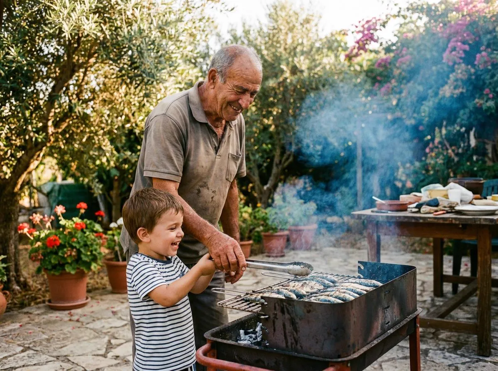

The house guide
The Griller's Manual
Everything you need to master the embers: how much charcoal, how to light it, exact times for fish, meat and vegetables — and the tricks that separate the amateur from the master.

Everything you need to master the embers: how much charcoal, how to light it, exact times for fish, meat and vegetables — and the tricks that separate the amateur from the master.
With EKOOLOGY you use less than with traditional charcoal — the calorific power is higher. Quick guide for a ~1.5-hour barbecue:
| People | EKOOLOGY biochar | Equivalent |
|---|---|---|
| 2–4 | ~1.5 kg | half a 15 dm³ bag |
| 5–8 | ~3 kg | one 15 dm³ bag |
| 9–15 | ~5 kg | a 30 dm³ bag with room to spare |
| Big party (15+) | 8–10 kg | 60 dm³ bag |
For long barbecues (ribs, whole chicken, smoked dishes), add ~30% or use briquettes, which last longer with constant heat.
Stack the biochar in a pyramid at the centre of the grill. Air needs to circulate — don't pack it tight.
Two or three wood-wool firelighters at the centre of the pyramid. Never alcohol or petrol: dangerous, and they ruin the flavour.
Light it and don't touch it. EKOOLOGY lights faster than traditional charcoal — when the top pieces turn ash-white, it's almost there.
Once everything is ash-grey, spread the embers according to your technique (direct or indirect, below) and give the grate 5 minutes to heat up before any food touches it.
Embers spread beneath the food. For thin, quick cuts (up to ~4 cm): sardines, steaks, secretos, squid, sliced vegetables, skewers. Fast searing, caramelised outside.
Embers on one side only (or both sides with the centre free); the food cooks beside the heat, lid closed. For large, slow pieces: whole chicken, ribs, loins, big fish.
Master's trick: set up two zones — one half with embers (direct) and one without (indirect). Sear on the hot side, finish on the gentle side, and you always have somewhere to escape to if the fat flares up.
The world's chefs don't grill by eye: they grill by internal temperature. Choose your doneness and see the exact target — then just trust the thermometer.
The chef's target (maximum flavour and juiciness) side by side with the official safety temperature (USDA). Always pull the meat 2–4 °C before the target — resting completes it.
Time is the guide; temperature is the law. Tap the ⏱ on any row and the clock is ready to count — we'll remind you halfway to flip.
Flames burn the outside and leave the inside raw. Wait for the white ash — always.
Heat the grate for 5 min and scrub it. Food only sticks to a cold or dirty grill.
Let the crust form. If it sticks, it isn't ready to flip yet.
Half with embers, half without. Total control and safe from flare-ups.
Fish: before. Red meat: at the end (salt pulls the juices out if left too long).
5 minutes off the grill before cutting. The juices redistribute — juiciness guaranteed.

Nobody is born a grill master — you learn beside someone who has already burnt plenty of sardines. That's what this manual is: the knowledge of generations, organised for your next barbecue. Print it, share it, teach it.
And when a question comes up with the embers already glowing, Chef Kool answers on the spot.
Our fire chef lives in the bottom-right corner of this page. Ask how much charcoal you need, cooking times for any cut, or how to fix stubborn embers.